Ванілла+. Quark, Future MC і Charm додають сотні блоків і механік, зокрема з новіших версій гри.
Фінал. Око Енду роблять із коралу з планети біля Тау Кита, тож до Енду веде весь космос.
Маршрут збірки
Від Землі до краю Сонячної системи, а звідти до інших зір. Натисни на планету, щоб відкрити її сторінку.
T1–T6 — рівень ракети, на якій туди можна долетіти. Планети стоять по порядку від Сонця, супутники — під своєю планетою.
зона життя, надто гаряче, надто холодно — як на карті галактики в грі.
Інші зоряні системи
Ракета 6 рівня долітає до інших зір. Біля Тау Кита росте корал, з якого роблять око Енду.
Надішли свій нік у Minecraft — точно так, як він записаний у лаунчері. Великі й малі літери мають значення.
Власник сервера підтверджує запит. Після цього бот сам додасть тебе в список сервера й надішле архів 2P2R.zip, посилання на Prism і коротку інструкцію.
Не розпаковуй архів. Його імпортують у лаунчер цілим, як є.
2. Встанови Prism Launcher
Завантаж Prism з офіційного сайту prismlauncher.org. Якщо перший інсталятор не запрацює, візьми варіант MinGW. Java окремо ставити не треба: лаунчер сам завантажить Java 25.
3. Імпортуй збірку
Відкрий Prism і увійди в акаунт: кнопка «Облікові записи» вгорі праворуч.
У списку з'явиться 2P2R з іконкою Землі. Вибери його й натисни «Запустити».
4. Перший запуск
Перед грою з'являється вікно перевірки оновлень. Під час першого запуску воно завантажує близько 150 МБ модів, тому триває довше. Просто дочекайся, поки воно зникне.
Якщо лаунчер питає про Java, погоджуйся на завантаження. Якщо з'явиться вікно «Updating MultiMC versions», натисни «Continue anyways» і ніколи не «Update».
5. Зайди на сервер
У грі відкрий «Мультиплеєр». Сервер 2P2R уже є в списку, натисни «Приєднатися». Якщо його немає, додай сервер вручну за адресою 46.172.141.160.
Оновлення
Нічого робити не треба. Збірка оновлюється сама під час кожного запуску: саме для цього й з'являється вікно перевірки перед стартом. Перевстановлювати архів треба лише тоді, коли про це скаже власник сервера.
Не оновлюй моди вручну через Prism. Автооновлення поверне версії зі збірки, і гра впаде через дублікати модів. Не додавай і OptiFine: про це в розділі «Якщо щось не так».
Початок
Сервер і бот
Сервер 2P2R стоїть удома у власника. Він працює цілодобово й вимикається лише тоді, коли надовго зникає світло або власник проводить технічні роботи.
Адреса
46.172.141.160
Коли працює
Сервер працює цілодобово. Комп'ютер сервера живиться від зарядної станції, тож кілька годин без світла він переживає.
Якщо сервер усе ж вимкнувся, бот напише тобі, щойно він знову запуститься.
Щоночі о 01:05 за Києвом робиться бекап світу, а потім оновлюється карта світу. Гра при цьому не зупиняється.
Telegram-бот
Бот @ddwpfjjipej2bot пише в особисті лише одне: що сервер запустився. Про вимкнення він не пише, щоб не спамити, тож чи працює сервер зараз, дізнавайся командою /status.
Команда
Що робить
/start
Підписатися на сповіщення
/join
Попросити місце на сервері й отримати збірку
/status
Чи працює сервер зараз і хто грає
/stop
Відписатися
Список гравців
На сервер пускають лише гравців зі списку. Тебе додає бот, коли власник підтверджує твій /join. Нік у лаунчері має точно збігатися з тим, що ти написав боту. Змінив нік — зроби /join ще раз.
Скін
Напиши в чаті /skin, перетягни у вікно PNG-файл свого скіна (64×64) і натисни «Застосувати скін». Його побачать усі гравці, і він зберігається на сервері. Повернути стандартний скін можна кнопкою «Стандартний скін».
Картинки на табличках
Збірка вміє ставити картинки й гіфки на таблички. Довгі посилання (e621, Discord) і файли з комп'ютера зберігаються на сервері збірки, а на табличку йде коротке посилання. Так картинки з Discord не зникають через добу. Докладніше в розділі «Ванілла+».
Початок
Системні вимоги
Офіційних вимог для збірок на 1.12.2 немає. Ці межі складено з коду модів збірки, того, скільки пам'яті гра займає насправді, і відгуків на форумах. Значення FPS тут оцінки, а не виміри.
Без цього гра не запуститься
Що
Вимога
Чому
Windows
10 або 11, лише 64-бітна
Java 25 не має 32-бітної версії для Windows, а Prism не підтримує Windows 7 і 8.1.
Відеокарта
драйвер з OpenGL 2.1 або новішим
Рушій чанків Nothirium сам вибирає режим під відеокарту: від OpenGL 1.5 до 4.3. Стара карта не завадить запуску, лише працюватиме повільніше.
Пам'ять
щонайменше 8 ГБ у системі
Гра бере до 4 ГБ і ще близько 1 ГБ поза Java. Windows забирає 2–3 ГБ.
Диск
≈2 ГБ плюс світи
Збірка, Java і файли Minecraft.
Який комп'ютер підійде
Рівень
Приклад заліза
Чого чекати
Не піде
4 ГБ пам'яті; 32-бітна Windows або Windows 7/8.1; Intel HD 2000/3000; нетбуки на Celeron N4020
не запуститься або вилітатиме
Мінімум
Core i3/i5 3–4 покоління + Intel HD 4000/4600, 8 ГБ (ThinkPad T430/T440, HP ProBook 450 G1)
низькі налаштування, дальність 6–8 чанків, ривки в бурях
Рекомендовано
Core i5 6–8 покоління + UHD 620, MX150 або GTX 1050, 8–16 ГБ, SSD
стабільна гра на середніх налаштуваннях
Процесор
Тут важливіші ядра, ніж частота: Nothirium будує чанки в кількох потоках, Pulsar рахує освітлення, Dynamic Surroundings — погоду й звуки. Мінімум — 2 ядра й 4 потоки, комфортно — 4 ядра й більше.
OptiFine і шейдери не підтримуються. Вони несумісні з рушієм рендеру збірки: гра вилітає, а скіни гравців стають чорними. Кольорове освітлення в збірці вже є.
Земля
Виживання на Землі
Чим ця збірка відрізняється від звичайного Minecraft з першої ж ночі.
Справжня темрява
Без місячного світла ночі й печери майже чорні. Розумні моби розбивають джерела світла, тому освітлення доводиться ховати й захищати, а не просто ставити смолоскипи навколо. Смолоскипи обпікають: удар смолоскипом підпалює, а динаміт, зламаний смолоскипом, вибухає. На безповітряних планетах звичайні смолоскипи гаснуть.
Портал у Незер поширює заразу
Щойно ти запалиш портал, Незер почне розповзатися в радіусі 30 блоків: камінь і трава стають пекельним каменем. Щоб зупинити це, постав поруч із порталом 4 блоки вугілля. Гра напише, коли темна енергія зникне.
Забруднення
Печі, вогонь, лава, вибухи, механізми й навіть тварини дають викиди. Без димаря дим розходиться навколо, а перекритий димар вибухає. Як із цим жити, описано в розділі «Екологія».
Інші правила
Рецепти відкриваються поступово. JEI показує лише те, що ти вже бачив. Докладно в розділі «Рецепти й JEI».
Феєрверки складаються лише по 3 в одному слоті, тож запас для польотів на елітрах обмежений.
Елітри працюють лише у Верхньому світі й в Енді.
Сильний удар вибиває щит із рук, а удар об стіну на швидкості завдає шкоди.
Сон: ніч пропускається, коли сплять усі гравці, які не відійшли від клавіатури. Хто не рухається дві хвилини, вважається відсутнім. Удвох можна спати в одному ліжку.
Дошки оголошень
У селах стоять дошки із завданнями: візьми одне, принеси потрібне до кінця часу й отримай нагороду. Завдання бувають звичайні, незвичайні, рідкісні й епічні. Після висадки на Місяць, Марс, астероїди, Венеру, Меркурій, Цереру чи Іо з'являються космічні завдання з матеріалів цих світів, і здати їх може лише той, хто там побував. Зразки з Фобоса, Європи, Ганімеда, Каллісто й Тритона оплачуються деталями наступного кроку: пластинами, титаном, схемами й термотканиною.
Земля
Верхній світ
На Землі стоїть база: тут видобувають більшість ресурсів і будують ракети. Рельєф звичайний, але моди додали нові камені, печери, споруди й мешканців.
рельєф ванільний 4 нові камені 9 підземних біомів темні ночі
Рельєф і біоми
Тип світу. На сервері — «реалістичний» тип Quark: вищі гори, глибші долини, хмари на висоті 260. Місцевість, досліджена до 23 листопада 2026 року, лишилася звичайною, а на межі з новою вона плавно переходить у реалістичну на відстані близько 96 блоків.
Нові камені. Великими покладами лежать мармур (рівнини), вапняк (болота й узбережжя), яшма (пустелі й меси) і сланець (холодні біоми). Граніт, діорит і андезит зібрані у великі скупчення. З усіх робиться ціла родина будівельних блоків — дивись «Будівельні блоки».
Дерева. У болотах ростуть болотні дуби з лозою й велетенські гриби, в інших місцях трапляються квітучі дерева з рожевим листям.
Темний ліс небезпечніший: там бродять поборники й ілюзіоністи, а з ілюзіоніста може випасти тотем.
Пустелі перетинає перекотиполе. Розбий його — випаде дрібниця, зрідка смарагд чи діамант.
Села
Села з'являються в більшій кількості біомів і будуються з місцевих матеріалів: з пісковику в пустелі, зі смереки в тайзі тощо.
Будинки обставлені за професією жителя, навколо більше дерев, квітів, грядок і світла. Трапляються й зомбі-села: зруйновані, без живих жителів.
Жителі мають нові обміни: бібліотекар купує зачаровані книги, коваль ремонтує ковадла, картограф продає карти споруд.
Печери тут різні. Quark додав підземні біоми — великі печери зі своїм виглядом і мешканцями:
Біом
Що там
Буйний
трава, лоза й квіти під землею
Зарослий
коріння й мох на стінах
Сяйвогрибний
сяйвоміцелій і великі сяйвогриби, що світяться в темряві
Пісковиковий
піщана підлога й стіни з пісковику
Слизовий
вода на підлозі, слизні
Павучий
павутиння й павуки
Призмариновий
призмарин і морські ліхтарі
Крижаний
лід і морозний камінь
Лавовий
озера лави й вогняний камінь
Кристалеві печери — рідкісні (приблизно одна на 150 чанків), з кольоровими кристалами, що світяться, і багатими жилами руди.
Сталактити й сталагміти ростуть у печерах нижче Y 55.
Глина лежить під землею так само часто, як земля.
Глибше Y 20 з'являються мешканці й попільці, а в темряві — примари, які проклинають речі. На висоті Y 3–20 трапляються коробки монстрів.
Руди для космосу
Окрім звичних руд, на Землі є руди Galacticraft: мідь (до Y 74), олово (до Y 59), алюміній (до Y 44) і кремній (до Y 24), а також озера нафти на Y 13–32. Висоти кожної руди — у «Де що шукати».
Природа живе
Тварини й жителі змінюють світ. Корови й кури відновлюють траву, свині садять дерева, скелети розводять гриби, а жителі прокладають стежки, ставлять світло й огороджують село стіною або парканом.
Тварини самі їдять корм, що лежить на землі, і від цього лікуються й розмножуються.
Сніг падає шарами й накопичується під час снігопаду, лягає на траву й під листя дерев.
Вода: плавання й повзання як у новіших версіях, бульбашкові стовпи, а сходи, плити й паркани можна ставити у воду.
Звуки біомів, туман і погода стали живішими.
Небезпеки
Темрява: ночі без місяця майже чорні, а розумні моби гасять світло й виламують двері — «Моби».
Забруднення: печі, вогонь і машини дають викиди — «Екологія».
Зараза з Незеру: запалений портал перетворює все навколо на пекельний камінь, доки не поставиш поруч 4 блоки вугілля — «Незер».
Земля
Незер
Незер класичний, як у 1.12, без біомів новіших версій. Моди додали базальт, скам'янілості, шипи й руїни. Звідси беруть пил блейза для ока Енду й світлокамінь для факелів у космосі.
1 блок = 8 на Землі елітри не працюють 4 блоки вугілля зупиняють заразу
Портал і зараза
Щойно ти запалиш портал, Незер почне розповзатися на Землі в радіусі 30 блоків: камінь і трава стають пекельним каменем. Щоб зупинити це, постав у цьому радіусі 4 блоки вугілля . Гра напише в чат координати порталу, а потім — коли темна енергія зникне.
Що там нового
Базальт — великі скупчення на висоті Y 20–120. З нього роблять полірований базальт, цеглу й бруківку.
Пекельні скам'янілості — велетенські кістяки в пекельному камені.
Обсидіанові шипи зі світлокаменем і зруйновані портали.
факели зі світлокаменю — звичайні смолоскипи на безповітряних планетах гаснуть
Кварц
компаратори, спостерігачі, будівельні блоки
Пекельний наріст
основа майже всіх зілль
Сльоза Ґаста, магмовий крем
зілля регенерації й вогнестійкості
Пісок душ, обсидіан
пісковик душі, портали, маяки
Правила
Елітри в Незері не розкриваються — літати доведеться на Землі й в Енді.
Незер не затемнений: тут видно так само, як у звичайному Minecraft.
Лава й вогонь дають викиди, тож база біля порталу теж потребує димарів і фільтрів.
Земля
Енд
Енд — фінал збірки. Щоб туди потрапити, треба пройти весь космічний маршрут: око Енду роблять із коралу з Тау Кита F. Нагорода — міста Енду, шалкери й елітри.
острови з каменю Енду око Енду з коралу елітри на кораблях
Як потрапити
Око Енду крафтиться з перлини Енду, пилу блейза й вогненного коралу з Тау Кита F. Увесь шлях описано в «Шляху до Енду».
Портал стоїть у фортеці під землею, як завжди. На рамках порталу видно кольорові руни: портали з однаковими рунами ведуть в одне місце.
Острів дракона
Дракон, обсидіанові стовпи з кристалами — як у звичайній грі.
Після смерті дракона на головному острові проростає біотит . Руда біотиту трапляється й на інших островах.
Блок біотиту лагодить елітри на ковадлі, а повторно викликаний дракон дає луску для другої пари елітр.
Зовнішні острови
Міста Енду — величезні чотириярусні шпилі з мостами, кімнатами й скарбницями. Біля них висить корабель Енду з елітрами .
Будівлі, вежі, кристали й дерева Енду, скупчення шалкерів.
Хорус: фрукт хорусу телепортує, а якщо поруч є блок перлин Енду — то прямо до нього.
Шалкери
Ендерміт, що опинився на пурпурному блоці , стає шалкером. Тож шалкерів можна розводити, а з ракушняків шалкера робити коробки шалкера — переносні скрині, що зберігають уміст.
Правила
Енд не затемнений.
Елітри працюють тут і у Верхньому світі. Феєрверки складаються лише по 3 в одному слоті.
Земля
Рецепти й JEI
JEI у 2P2R працює як записник дослідника: він показує лише те, з чим ти вже стикався. Крафт при цьому нічим не заблокований. Якщо знаєш рецепт, можеш скрафтити річ і без JEI.
Як відкривається рецепт
Предмет стає відомим, коли ти потримав його в інвентарі або побачив у скрині чи іншому контейнері.
Рідина — коли ти подивився на неї або потримав у відрі.
Рецепт з'являється, коли відомі всі його інгредієнти.
JEI заглядає на два кроки вперед: з колоди відкриваються дошки, палиці й верстак.
У творчому режимі JEI показує все.
Не бачиш рецепт? Подумай, якого інгредієнта ти ще не тримав. Найчастіше бракує проміжної деталі: скляної колби, повторювача, листа металу. Зроби або знайди її, і рецепт з'явиться.
Рецепти, які відкриває висадка
Речі з матеріалів інших світів крафтяться лише після того, як ти сам там висадився. Висадка відкриває рецепт кожному гравцю окремо.
корали, єдиний інгредієнт ока Енду, який є лише там
Змінені рецепти
Око Енду: перлина Енду, пил блейза й корал Тау Кита F.
Надміцні пластини ракет 4–6 рівнів та кисневі балони 5–6 рівнів потребують матеріалів із супутників. Див. «Ракети».
Компостер приймає листя й саджанці всіх дерев, рослини Quark, Galacticraft і GalaxySpace. Корали Тау Кита в нього не кладуться: вони потрібні для ока Енду.
Активаторні, детекторні й золоті рейки крафтяться по 12 штук.
Земля
Екологія
Усе, що горить, дає викиди: сірку, пил або вуглець. Вони отруюють тебе й тварин, а в закритому приміщенні можуть задушити чи навіть спричинити вибух.
Джерела викидів
Печі, смолоскипи, вогонь, лава, вибухи, механізми й транспорт, а ще тварини.
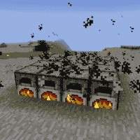
Приклад джерела викидів
Чим шкодять
Шкода залежить від того, скільки викидів у сусідніх чанках: 100% — це 512 блоків хмари. Що більше викидів, то більше ефектів накладається. Ворожі моби в забрудненні, навпаки, сильнішають. Пряме торкання хмари засліплює, а сірка ще й отруює.
Хмара з 10 і більше блоків вуглецю (16 сірки, 20 пилу) вибухає від вогню чи лави.
Димарі
Щоб дим не розходився довкола печі, постав поруч димар. Якщо піч димить сильно, димарів треба більше. Перекритий будь-яким блоком, крім фільтра, димар згодом вибухне.
Фільтри
Фільтр ставлять зверху або посередині димаря. Кожен фільтр ловить свій вид викиду, але потребує фільтрувального матеріалу й очищення від побічних продуктів:
сірку ловить вовна: одна вовна дає 8 пилу сірки;
пил ловить папір: один аркуш дає 8 грудок глини;
вуглець ловить листя: один блок листя дає 8 роздробленого вугілля.
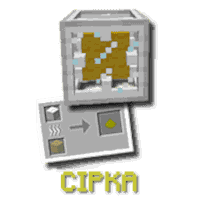
Сірка: викид стає пилом сірки
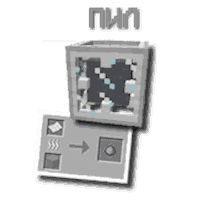
Пил: перетворюється на глину
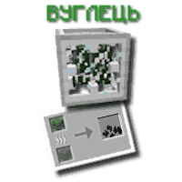
Вуглець: стає роздробленим вугіллям
Усе можна автоматизувати воронками: воронка збоку подає матеріал, а одна воронка під усім стовпом збирає побічні продукти з усіх фільтрів вище. Фільтр ще й дає редстоун-сигнал, коли заповнений.
Очищення й захист
Є залізні, золоті й діамантові вакуумні трубки, пакувальники й респіратори. Щоб вони запрацювали, на ковадлі поєднай інструмент із фільтрувальним матеріалом: листям, вовною або папером. Одягни набір, наведись на хмару викидів і тримай праву кнопку миші.
Очищувачі повітря (фільтр із помпою) створюють навколо себе чисту зону: із залізним фільтром радіусом 8 блоків, із золотим 16, з діамантовим 32. Тож ними можна вкрити територію. Фільтр із насосом під водою очищує й водойми: радіус 3, 5 і 9 блоків.
У закритому приміщенні з джерелом викидів будуй велику вентиляцію: радіус дії однієї помпи — 16 блоків. Редстоун-насосу потрібна енергія генератора (50 одиниць за секунду), а сигнал редстоуну його вимикає. Аерометр допомагає знайти слабкі місця, а насос для викидів прибирає хмари прямо із землі, якщо поставити поруч фільтри, дати енергію й вивести трубу високо. Він тягне хмари на 60 блоків довкола верхньої труби; коли всі фільтри повні, зупиняється.
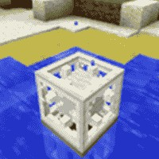
Найпростіший універсальний фільтр
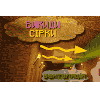
Лінія вентиляції засмоктує сірку
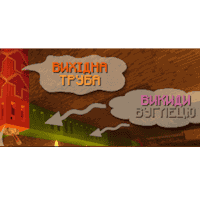
Лінія вентиляції засмоктує вуглець
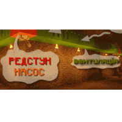
Редстоун-насос живиться від генератора
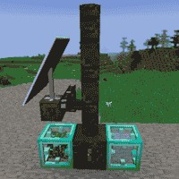
Насос для викидів
Теплиці
Вуглець отруйний для людей і тварин, але рослини його люблять і ростуть швидше. Закачуй викиди в теплицю, і забруднення працюватиме на тебе.
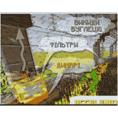
Приклад системи для теплиці
Земля
Ванілла+ і дрібниці
Усі дрібні покращення з Quark, Charm, Future MC та інших модів, які ввімкнено у збірці. Світ і моби — на своїх сторінках.
Картинки на табличках
Натисни X (клавіша SignPicture).
Встав посилання на картинку або натисни «Вивантажити» й вибери файл з комп'ютера.
Натисни «Розташувати» й постав табличку.
Довгі посилання (e621, Discord) і файли з комп'ютера зберігаються на сервері збірки, а на табличку йде коротке посилання. Великі картинки зменшуються до 1024 пікселів, WebP перетворюється на PNG чи JPG. Ліміти: 16 МБ на файл і 30 картинок на годину.
Разом
Ліжко на двох: в одному ліжку можуть спати двоє гравців, а то й більше.
Кінь на двох: другий гравець сідає позаду (ПКМ по коню). Кермує передній, задній може розвернутися й відкрити інвентар. Так само з ослами й мулами.
Скіни:/skin у чаті.
Будівництво
Повний перелік із картинками — у вкладці «Будівельні блоки». Коротко: блоки кори, різьблене дерево, обрамлене скло, блоки залізних пластин, полірований і міцний камінь, піщана й снігова цегла, нові види пісковику, дерен, блоки цукрової тростини, а для більшості блоків — сходи, плити й стіни. Кельма ставить випадковий блок із хотбару: зручно для руїн і стежок.
Чорнокамінь
Темний будівельний камінь, схожий на глибинний сланець і чорнокамінь новіших версій. У Незері він не з'являється: його роблять із кругляку й вугілля, тож він доступний з першого дня.
Потріскана цегла — переплав цеглу в печі. Різьблений — дві плити шліфованого одна над одною.
Зі звичайного, шліфованого й цегли є сходи (×4), плити (×6) і стіни (×6) за звичайними схемами, а ще кнопка з одного шліфованого.
Рубання дерев
Затисни Shift і зламай сокирою колоду дерева: решта стовбура розбереться сама, знизу вгору, за кілька миттєвостей. Колоди одразу йдуть в інвентар кількома стаками, а що не влізе, ляже біля пня.
Кожна колода коштує сокирі одну міцність і трохи голоду. Зламалась сокира або ти прибрав її з руки — рубання зупиняється.
Рубаються лише справжні дерева з природним листям: стіни й хати з колод не зачепить. Навіть найбільші джунглеві дерева падають цілими.
Листя опадає саме, як завжди. Без Shift сокира ламає по одному блоку.
Механізми й редстоун
Жолоб: предмет, поданий воронкою чи викидачем, одразу падає точно під жолоб. Редстоун-сигнал його зупиняє.
Ендер спостерігач дає повний сигнал, коли гравець дивиться прямо на нього. Крафт: око Енду, редстоун і біотит.
Граві-пісок (пісок і перлина Енду) падає лише від редстоуну, а якщо падати нікуди — піднімається. Сигнал передається сусіднім блокам граві-піску.
Редстоун індуктор віддає суму сигналів із трьох боків. Активний повторювач чи компаратор збоку його фіксує.
Редстоуновий рандомайзер на кожен імпульс ззаду вмикає навмання лівий або правий вихід.
Датчик погоди дає повний сигнал під час дощу чи снігу.
Металеві кнопки: золота дає дуже короткий імпульс, залізна — дуже довгий. Обсидіанова натискна плита спрацьовує лише від гравців.
Кольоровий слиз: блоки слизу фарбуються. Поршні зліплюють лише однакові або споріднені кольори, наприклад червоний із пурпуровим, але не з синім.
Поршні рухають скрині та інші блоки з умістом (крім спавнера) — до 12 блоків за раз, і підкидають предмети, що лежать. Липкі — тягнуть назад. Редстоун на поршні не обривається, коли той висувається.
Поршні-руйнівники: поршень, що штовхає залізний стрижень (2 залізні злитки й ендер-стрижень), ламає блоки попереду.
Роздавачі садять насіння (какао — на тропічне дерево, хорус — на камінь Енду), ставлять блоки й програють платівки в програвачі перед собою. Роздавач можна скрафтити й з пошкодженого чи зачарованого лука.
Редстоун пісок сиплеться, як пісок, і живить усе довкола, як блок редстоуну. Регульована лампа світить тим яскравіше, чим сильніший сигнал.
Вертало (звичайне й липке) обертає блоки, конструкції зі слизу й блоки з умістом на 90°. Напрямок задається ПКМ. Напівблоки мають властивості слизу (зокрема кольорового), редстоуну чи обсидіану лише з одного боку.
Морський ліхтар вимикається редстоуном. Рейки крафтяться по 32 замість 16.
Вагонетка з піччю має вікно для палива й бере будь-яке паливо печі. Shift+клік паливом запускає й зупиняє її. Вона працює з воронками й активаторними рейками, а заправлена тримає завантаженими чанки 3×3 навколо себе.
Високошвидкісні рейки: з гравцем вагонетка мчить близько 40 блоків за секунду, порожня — близько 16, і може йти схилом. Є й перехрестя.
Залізні ланцюги зчіплюють човни чи вагонетки в потяг: ПКМ ланцюгом по одному транспорту, потім по іншому.
Вагонетка + блок: ПКМ скринею, воронкою чи іншим блоком по звичайній вагонетці перетворює її на відповідну. Роздавач, повторювач і вагонетки зі скринею, піччю, воронкою чи динамітом крафтяться й одразу з усіх складників.
Fun TNT: динаміт рівнів від 2 до 128 і ядерна бомба. Кожен рівень робиться з попереднього.
Поршень-руйнівник. Сигнал висуває поршень, той штовхає залізний стрижень на блок уперед, і блок перед стрижнем ламається, як від кайла.Жолоб. Предмет із воронки чи викидача над жолобом падає рівно під нього: зручно годувати ферми й печі. Сигнал редстоуну жолоб зупиняє.Потяг. Залізні ланцюги зчіплюють вагонетки (і човни). Вагонетка з піччю тягне всіх, а заправлена ще й тримає чанки довкола себе завантаженими.
Інвентар і керування
Сортування кнопкою в інвентарі та скринях: за категоріями (їжа — за ситністю, інструменти — за якістю). Кнопка «Викласти в скрині поруч» розкладає речі по найближчих скринях. Улюблені речі (Ctrl+клік) не сортуються й не викладаються.
Відновлення інструмента: зламаний інструмент одразу замінюється таким самим з інвентаря.
Shift+ПКМ переносить предмет у сітку крафту. Z відкриває розширену панель. F працює й в інвентарі. Shift+T показує предмет у чаті.
Предмет кладеться в шалкер просто в інвентарі. Уміст шалкера, вміст карти й ситність їжі видно при наведенні, а пошук у скрині затемнює все зайве.
Стріли: поки цілишся з лука, колесо миші перемикає тип стріл.
Скрині в човнах, рюкзаки (купуються в чинбаря, відкриваються ПКМ) і свисток для коня: кличе твого прирученого коня з відстані до 64 блоків, якщо на ньому ніхто не сидить і він не на прив'язі.
Тотем утримування з'являється на місці смерті й тримає речі. Забрати їх може будь-який гравець, ударивши тотем кілька разів. Якщо загинути вдруге, тотем розсипається, а від смерті в PvP він не з'являється. Тотем безсмертя рятує з будь-якого місця в інвентарі, не лише з руки.
Старовинний атлас — карта, що сама позначає споруди.
Предмет на землі починає блимати за 10 секунд до зникнення.
Ванільної книги рецептів немає — рецепти шукай у JEI (див. «Рецепти й JEI»).
Клавіші збірки
Так їх призначено у збірці. Змінити можна в налаштуваннях керування або в майстрі клавіш (F7): він показує клавіатуру й підсвічує конфлікти.
Клавіша
Що робить
R / U
JEI: рецепт / використання предмета під курсором; Backspace — назад
JEI: закладка на предмет / пауза перебору варіантів рецепта
цифрова 1, 3, 4, 0
Hwyla: показати чи сховати підказку про блок; рецепт і використання блока в JEI; налаштування
Y / V / ;
атлас / атлас Atlas Extras / панель координат, біому й часу під мінікартою
]\[,
в атласі: додати мітку, видалити мітку, сховати мітки, стежити за гравцем
C, = / -
зум (тримати), наблизити / віддалити
X
картинка на табличці
Z / N / B
розширена панель / зафіксувати напрямок блоків / автострибок
F2
скриншот; переглянути їх можна кнопкою в меню паузи
Чари й ковадло
Матриця чарів: стіл зачарування збирає чари з частин, які ти розкладаєш на сітці. Частини коштують лазурит і досвід.
Древні фоліанти трапляються в підземеллях і бібліотеках фортець. Фоліант із зачарованою книгою того самого чару на ковадлі дає книгу на рівень вище за максимум. Це коштує 35 рівнів, і ще 35 — накласти її на предмет.
Кольорові руни з кристалевих печер фарбують сяйво чарів на предметі.
Нові чари: «Магнетизм» — інструмент сам збирає дроп; «Порятунок» — зношений предмет не зникає, а падає під ноги, щоб його можна було полагодити (не в лаві!); книга «Зняття прокляття» на ковадлі знімає прокляття з предмета.
Нові прокляття (незграбності, шкоди, переслідування, іржі) накладає Примара своїм дотиком. Чаклунська шапка від цього захищає.
На ковадлі: зачарована книга й порожні скляні колби дають пляшечки чар (досвіду). Чари з предмета можна перенести в порожню книгу: вони слабшають, а предмет зникає. Предмет із барвником отримує кольорову назву (3 рівні).
Сон: ніч минає, коли сплять усі гравці, крім відсутніх (хто не рухається дві хвилини).
Двері: сусідні двері відчиняються разом, а стукати в двері голосніше, ніж ламати.
Драбини: ставляться вниз клацанням по нижній, а якщо дивитися вниз, спускаєшся швидше.
Збір урожаю ПКМ по стиглій рослині одразу пересаджує її. Мотика косить траву й збирає врожай на площі до 5×5 — що краща мотика, то ширше.
Сокира рубає листя, лопата робить стежку з бруду й знімає шари снігу, кайло швидше ламає поршні.
Табличку можна редагувати ПКМ. Стійка для броні має руки й тримає зброю, а Shift+ПКМ міняє твою броню на її.
Крафт: кам'яні інструменти з будь-якого каменю чи кременю, сходи по 8, плити назад у блок, блок глини на 4 глини, будь-яку вовну можна перефарбувати. Скло розбивається на уламки (з Вдачею — більше), а 4 уламки складаються назад у блок.
Хвіртка з незерської цегли: блоки пекельної цегли замість дощок і огорожі з пекельної цегли замість паличок, виходить 2.
Піч приймає лише те, що можна переплавити, і віддає більше самородків за залізні й золоті речі. Смолоскип у печі переплавляє 2 предмети.
Золоті інструменти міцніші й швидші, ніж у звичайній грі.
Компас прив'язується до маяка (Shift+ПКМ по маяку).
Падіння на губку зменшує шкоду. Мокра губка, поставлена в Незері, висихає сама.
Із кавуна ножицями можуть випасти всі 9 скибок. Шкіряна броня під зіллям невидимості теж невидима.
Стрибучість II і вища дає змогу заходити на блок без стрибка. Блок слизу відкидає й збоку, і предмети теж. Кальмари, коли їх б'ють, пускають чорнило, що засліплює.
Блок у вагонетку ставиться ПКМ, без окремого крафту. Дихання дракона не лишає колби під час варіння й кидається.
Тварини
Приручені тварини не отримують прямої шкоди від гравців і лікуються біля маяка з регенерацією. Собак і котів можна гладити (Shift+ПКМ).
Вовки носять броню й скрині, а вовки й коти з'являються з різними забарвленнями.
Кури скидають пір'я й стрижуться ножицями. Вівці у вовні краще захищені. Малі зомбі горять на сонці.
Залізний голем тріскається від ран і лагодиться залізним злитком.
Тварини самі їдять корм із землі, а нероб серед жителів більше немає.
Отруйна картопля, згодована малюкові тварини, може його отруїти — і тоді він ніколи не виросте.
Слиз у відро: ПКМ відром по маленькому слизу. У слизовому чанку він стрибає у відрі, а ПКМ по блоку випускає його назад.
Марнославство
Вітрило зі стягу на човні (ПКМ), фарбовані елітри, кольорові назви предметів.
Копія феєрверка: порожній феєрверк, скрафчений із готовим, стає його копією, а оригінал лишається.
Сісти можна на сходи (ПКМ). Чаклунська шапка трохи захищає й зменшує шкоду від відьом.
Різне
Підбиранг — кайло-бумеранг: летить, ламає, у що влучить, і повертається з дропом. Крафтиться з діамантовим серцем камнелиса, зачаровується на Незламність, Вдачу й Шовковий дотик.
Нові стріли: ендер стріла (стріла й перлина Енду) переносить, як перлина, але далі; вибухова (стріла й 2 пороху) вибухає; факельна стріла (стріла й смолоскип) ставить смолоскип, куди влучить.
Нові зілля: квапливості (з кристалів призмарину), стійкості (з ендер біотиту), втоми (квапливість із ферментованим павучим оком) і бачення загрози (зі сяйвогриба): під ним темні місця, де можуть з'явитися монстри, іскрять.
Колозабуд: блок можна поставити під той, на якому стоїш, — подивись зверху на його нижню грань, і біля прицілу з'явиться рамка. N фіксує напрямок блоків, що ставляться.
Нотні блоки: власне меню налаштування, а з головою моба зверху грають його звук.
Пил світлокаменю й порох кладуться на землю. Крихітна картоплинка говорить, якщо її назвати.
Сніговий голем із гарбузом і ім'ям, якого вбила відьма, кидає голову гравця. Іменована голова, поставлена на землю, зберігає своє ім'я.
Компостер перетворює рослини з усіх модів збірки на кісткове борошно.
Тризуб лежить у сховищі підводного храму — приблизно в кожному другому храмі. Його кидають, а чари дають повернення після кидка, блискавку в грозу, ривок у воді чи під дощем і додаткову шкоду морським мобам. Оболонку наутилуса можна виловити як скарб, а музична платівка «otherside» (Lena Raine) зрідка трапляється в скринях підземель і фортець.
Колозабуд. Стоячи на краю, подивись униз за край блока, на його нижню грань. Біля прицілу з'явиться рамка, і блок стане під тим, на якому стоїш. Зручно для мостів і стовпів.
Земля
Будівельні блоки
Декоративні блоки збірки: що це й як їх отримати. Рецепти з усіма подробицями показує JEI у грі.
Для будь-якого блоку: більшість має сходи, плити й стіни. Сходи крафтяться по 8 штук, а дві плити складаються назад у блок. Кельма (залізо й палиці) ставить випадковий блок із хотбару — зручно для доріжок і руїн.
Земля
Де що шукати
На якій висоті й у якому світі лежить кожна руда. Дані — з огляду світу Just Enough Resources: ті самі графіки показує JEI у грі, якщо відкрити руду й натиснути U.
Як читати графік: ліворуч — низ світу, праворуч — верх; чим вищий стовпчик, тим більше руди на цій висоті. «Найбільше на Y» — висота, де копати найвигідніше.
Земля
Підземелля й руїни
Споруди з лутом і монстрами, які генеруються у збірці: на Землі, у Незері, в Енді й на планетах.
Спавнери вичерпуються. Після 50 мобів спавнер зникає, тож фермою досвіду його не зробиш, а зачищене підземелля лишається безпечним. Атлас сам ставить мітки на знайдених спорудах, а космічна станція шукає підземелля на планеті під собою в радіусі 1000 блоків.
Звичайний світ
Найцінніше в скринях: золоті яблука, зачаровані книги й древні фоліанти, сідла, мапи скарбів, тризуб у підводних храмах і тотем безсмертя в особняках.
Споруда
Де шукати
Що там
Мод
Підземелля зі спавнером
під землею будь-де
скрині, спавнер зомбі, скелетів чи павуків
Minecraft, Quark
Біомні підземелля
пустеля, крига, грибні острови
своя кладка й мешканці: кадавр у пустелі, зимовий скелет у снігах, грибні корови на островах
Biome Specific Dungeons
Різноманітні підземелля
під землею
нові планування з більшою кількістю кімнат
Quark
Покинуті шахти
під землею, у месах — назовні
вагонетки зі скринями, павутина, печерні павуки
Minecraft
Фортеця
глибоко під землею, шукай оком Енду
портал в Енд, бібліотеки
Minecraft
Села
рівнини, пустелі, савани, тайга
жителі, торгівля, дошки оголошень із завданнями
Minecraft, Bountiful
Пустельний і джунглевий храми
пустелі, джунглі
пастки з динамітом і стрілами, скарби
Minecraft
Хатина відьми, іглу, лісовий особняк
болота, сніги, темний ліс
відьма, підвал іглу, ілледжери й тотем безсмертя в особняку
Minecraft
Підводний храм
глибокий океан
чотириярусний затонулий храм, щоразу з іншим лабіринтом кімнат; троє старших стражів (двоє в залах, один у тронній залі під шпилем); у сховищі — золото, діаманти, смарагди, золоті яблука, зачаровані книги й меч, а приблизно в кожному другому храмі ще й тризуб. Бувають зруйновані й обмерзлі
Better Monuments
Піратські кораблі
океан
пірати-скелети, скриня зі скарбом
Quark
Закопані скарби
за мапою з хрестиком із підземель
скриня під землею
Quark
Коробки монстрів
печери
блок, з якого вилазять моби, коли підходиш
Quark
Будиночки археологів
у стінах печер, почуєш «хмм»
житель, що торгує кістками й рідкісними речами
Quark
Храм майя, сфінкс, гробниці
джунглі, пустелі
скрині, пастки
Rex's Additional Structures
Руїни, руїни стін, криниці, ферми
поверхня різних біомів
дрібний лут, атмосфера покинутого світу
Rex's Additional Structures
Хати ілледжерів
ліси
ворожі ілледжери
Rex's Additional Structures
Входи до шахт, пастки, павучі гнізда, гнізда лускатниць
На світах без підземель трапляються руїни без босів: приблизно одна на 40 чанків, лише в нових, ще не відвіданих місцях. Їх будують з місцевого каменю й декору найдешевшого місцевого металу: алюмінію на Європі й Хаумеа, магнію на Ганімеді, кобальту на Міранді, міді на Proxima B, а на світах без металевих руд — із залізних пластин. А в скрині лежать листи металу, кремній, пластини, сухпайки, кисневі балони, метеоритне залізо й доломіт, зрідка діаманти.
Зруйнована станція — коробка 7×7 з дірявими стінами, вікнами й половиною даху, скриня всередині.
Місце падіння зонда — кратер з уламками металу й напівзакопаною скринею.
Бункер — люк на поверхні, залізна драбина вниз на 6 блоків і кімната з однією-двома скринями.
Розбитий корабель — корпус на 23 блоки цілком з одного місцевого металу, скляна кабіна, розлам посередині, сопла з ґрат; у трюмі дві скрині.
Покинутий супутник — основа й щогла із залізних пластин з ґратчастим краєм, похила тарілка з місцевого металу й один алюмінієвий блок у фокусі антени; скриня біля щогли.
Руїни в розрізі, збоку. Коричневі прямокутники — скрині. Метал стін, корпусу й тарілки щоразу місцевий.
Монстри тут розумніші, ніж у звичайному Minecraft: ламають двері й світло, ходять у вершниках і кличуть підмогу. Є й нові мешканці: на Землі в печерах і на воді, а в космосі на кожній планеті.
Табличка над головою показує ім'я моба. Чим менше в нього здоров'я, тим червоніше ім'я. Таблички видно за 64 блоки.
Розумні монстри
Мод Special AI дає ворожим мобам нові звички. Через них захищати базу треба інакше:
Ламають двері й ворота. Зомбі, кріпери й зомбі-свинолюди виламують дерев'яні й залізні двері, люки й хвіртки, якщо бачать тебе за ними. Ховайся за стіною, а не за дверима.
Гасять світло. Ті самі моби розбивають смолоскипи й ліхтарі, ліжка, верстати, печі, драбини, ріллю, а в космосі — алюмінієві дроти й труби. Кріпери просто вибухають поруч. Тому світло ховай у стіни й за скло.
Чіпають механізми. Скелети й свинолюди смикають важелі, тиснуть кнопки, перемикають повторювачі й підпалюють динаміт.
Еліта. Кожен двадцятий зомбі й кожен п'ятий скелет — особливий: бігає, стрибає на тебе, таранить, стріляє чергою, лікує сусідів, підкидає гравця або краде річ з інвентаря й тікає.
Вершники. Скелети й свинолюди (10%), зомбі, кріпери й відьми (5%) їздять на павуках, слизнях, тваринах і конях.
Реакції. Моби ухиляються від стріл (40%), відходять від кріпера перед вибухом і кличуть на допомогу сусідів, коли їх б'ють.
Човни. Моби вміють сідати в човни й переслідувати тебе на воді.
Тварини й села
Тварини самі підбирають і їдять корм із землі, від цього лікуються й розмножуються.
Якщо вдарити тварину, сусідні мирні тварини в радіусі 24 блоків розбігаються.
Не ламай чужих блоків у селі: падає репутація, і залізні големи стають ворожими.
Нові моби на Землі
Моб
Де
Що варто знати
Мод
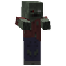
Мешканець
печери нижче Y 20
Зомбі глибин, з'являється по 1–2 там, де копають руду.
Quark
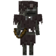
Попілець
печери нижче Y 20
Скелет глибин, по 1–2. Стріляє з темряви, тож копай з освітленням і щитом.
Quark
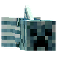
Водяний кріпер
океани й річки
Кріпер, що підпливає під водою. Небезпечний для мостів і причалів.
Aqua Creepers
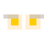
Очі
темні печери, ніч
Пара очей, що підкрадається, поки ти не дивишся, і лякає скримером. Тут налаштовано так, що можуть напасти навіть біля світла.
Eyes in the Darkness
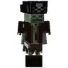
Пірат
піратські кораблі в океані
Скелет у капелюсі на борту корабля. З нього падає піратський капелюх.
Quark
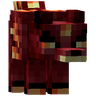
Лисичар
Незер
Нападає вогнем, але його можна приручити: годуй вугіллям, шанс 5% за шматок. Прирученому не страшні вогонь і лава.
Quark
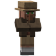
Археолог
будиночки в стінах печер, Y 20–50
Мирний житель-торговець. З нього падає капелюх, що збільшує видобуток руди.
Quark
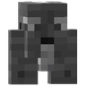
Камнелис
печери нижче Y 24
Боязкий кам'яний звір: ховається, коли підходиш. Приручається й носить предмет; з нього може випасти діамантове серце.
Quark
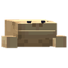
Жаба
болота
Мирна. Ніжки жаби — їжа, а смажені йдуть на зілля стрибучості. По середах жаби знають, який сьогодні день.
Quark
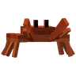
Краб
пляжі
Мирний. Крабові ніжки — їжа, крабовий панцир іде на зілля стійкості до відкидання.
Quark
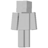
Примара
темрява глибоко під землею, особливо біля споруд
Майже невидима. Від її дотику на речі лягають прокляття; чаклунська шапка захищає.
Charm
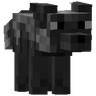
Лисиця
темні ліси, рідше інші ліси
Мирна; її можна приручити.
Outfox
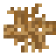
Перекотиполе
пустелі біля сухих кущів
Котиться вітром і топче посіви. Якщо розбити, випадає дрібниця: кістки, пір'я, насіння, зрідка смарагд, діамант чи сідло.
Tumbleweed
Що змінилося в знайомих мобів
Моб
Де
Зміна
Мод
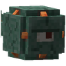
Вартові
глибокий океан
З'являються й поза храмами, зграйками до трьох, і не шумлять.
Quark
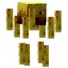
Блейзи
Незер
З'являються в усьому Незері, не лише у фортецях.
Quark
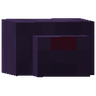
Ендерміти
Енд
Ендерміт на пурпурі стає шалкером, тож шалкерів можна розводити.
Quark
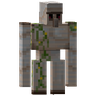
Залізний голем
села
Тріскається, коли поранений; лагодиться залізним злитком.
Future MC
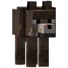
Вовки
ліси
Можна вдягти броню й почепити сумки для речей.
Wolf Armor
Бій
Щит ламається. Сильний удар може вибити щит із рук, і він кілька секунд не працює. Підніми щит за півсекунди до удару, і він парирує: відкидає ворога вдвічі сильніше. Іноді удар проходить крізь щит.
Удар об стіну. Якщо на елітрах чи після вибуху влетіти в стіну на швидкості, отримаєш шкоду.
Темні ночі. Без місяця ніч у Верхньому світі майже чорна: без світла мобів не видно, доки вони не поруч.
Спавнери вичерпуються. Після 50 мобів спавнер зникає: ферма досвіду на ньому не вийде.
Коробки монстрів у печерах на висоті Y 3–20 випускають 5–8 мобів, коли підходиш. Докладніше — у «Підземеллях і руїнах».
Космос
Космічні моби дихають у вакуумі, тож можуть чекати тебе під дверима бази.
Моб
Де
Що варто знати
Мод
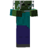
Еволюціонований зомбі
Місяць, Марс, Венера, астероїди, Енцелад, Тритон, Proxima B; також космічна станція
Космічна версія земного моба: дихає без кисню, тож чекає тебе й біля шлюзу.
Galacticraft
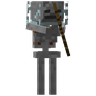
Еволюціонований скелет
ті самі світи, крім станції
У підземеллях Церери й Іо з'являється також зі спавнерів, разом із зомбі й павуками.
Galacticraft
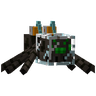
Еволюціонований павук
ті самі світи й станція
Лазить по стінах, тож огорожа бази його не зупинить.
Galacticraft
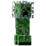
Еволюціонований кріпер
Місяць, Марс, Венера, астероїди
Вибух ламає блоки бази так само, як на Землі.
Galacticraft
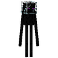
Еволюціонований ендермен
Місяць, Марс, Венера, астероїди, Енцелад, Тритон, Proxima B
Краде блоки бази й телепортується.
Galacticraft
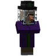
Еволюціонована відьма
Місяць
Кидає зілля, як земна.
Galacticraft
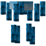
Еволюційний крижаний блейз
Марс, Європа, Енцелад, Тритон, крижані рівнини Proxima B
Крижаний родич блейза; на Європі це головний ворог.
GalaxySpace
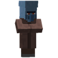
Прибулець
села на Місяці
Мирний; торгує, як звичайний житель.
Galacticraft
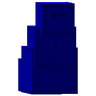
Слаймлінг
Марс: з яєць у печерах
Знайди яйце в печерах Марса й клацни по ньому: з часом вилупиться твій улюбленець. Їсть слизові кульки, а з торбою слаймлінга носить речі.
Galacticraft
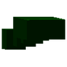
Сладжлінг
озера шламу на Марсі
Дрібний і ворожий; не лізь у шлам без потреби.
Galacticraft
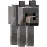
Астро вовк
не з'являється сам
Прирученого вовка можна взяти в космос: клацни по ньому кисневою маскою, і він стане астро вовком. Дихає з кисневого балона у своєму інвентарі, їсть звичайну їжу.
Від вугільного генератора до першого старту. Космос їсть багато металу, тож заздалегідь запасися залізом, міддю, оловом, алюмінієм, кремнієм, вугіллям, редстоуном і діамантами. Кремній лежить глибоко, нижче за інші руди.
Вугільний генератор
Перша машина. Рецепт: 3 мідні злитки зверху, по центру піч між залізними злитками, знизу алюмінієвий дріт між залізними. Генератор живить сусідні машини через дріт. Він дає викиди, тож постав поруч димар.
Паливо. Генератор приймає лише вугілля й деревне вугілля, а також їхні блоки. Одне вугілля горить 16 секунд, деревне — 8, а блок вугілля — 160 секунд: це та сама енергія, але в один слот уміщається вдев'ятеро більше. Генератор горить, навіть коли машини стоять, тож забирай паливо або постав сховище енергії.
Порядок машин
Виробник мікросхем робить пластини.
Компресор працює на вугіллі й стискає метал у листи.
Електричний компресор дає вдвічі більше листів.
Верстак NASA збирає ракети.
Перша основна напівпровідникова пластина відкриває записи про планети в книзі й дає книгу Galactic Research з рецептами енергії, телескопа й ракет.
Три види пластин
Виробник мікросхем бере діамант, 2 кремнію й редстоун. Останній слот вирішує, що вийде:
Останній слот
Результат
Для чого
факел з редстоуну
3 основні
перші машини, генератори, компресор
редстоуновий повторювач
1 покращена
електричний компресор, ракети, покращені панелі
лазурит
9 синіх сонячних
сонячні модулі
Листи металу
Компресор стискає 2 злитки в один лист: залізо, мідь, олово, алюміній.
Сталь: залізний лист і 2 вугілля.
Бронза: мідний і олов'яний листи.
Надміцна пластина для ракет: 2 сталі, 2 алюмінію й 2 бронзи дають 2 штуки.
Енергія
Акумулятори й сховище енергії тримають запас. Сонячна панель працює вдень без палива й без викидів: її збирають із повної сонячної панелі (6 одиночних модулів), 4 сталевих пластин, сталевої жердини, 2 дротів і основної напівпровідникової пластини. Покращеній панелі потрібні покращена напівпровідникова пластина й товстий алюмінієвий дріт.
Паливо й майданчик
Нафта лежить під землею чорними озерами. Набери її відром або каністрою.
Нафтоочисний завод перетворює нафту на паливо. Він повільний і прожерливий, тож дай йому акумулятори або сонячні панелі.
Злітний майданчик — 9 блоків квадратом 3×3, ракета стоїть у центрі.
Завантажувач палива ставиться впритул до майданчика, йому потрібні енергія й каністра палива.
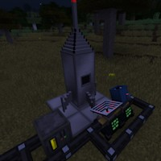
Ракета на майданчику із завантажувачем палива
Перша ракета
Ракету першого рівня збирають на верстаку NASA: головний обтічник, корпус, стабілізатори й двигун, а відсіки дають місце для вантажу. Вона долітає до Місяця й земної станції. Але спершу Місяць треба дослідити телескопом.
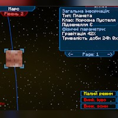
Карта галактики: тут вибирають ціль польоту
Перед стартом пройди передстартовий список: паливо, кисень, парашут і майданчик. Без парашута падіння під час повернення на Землю смертельне. Візьми балони, консерви, факели зі світлокаменю й усе, щоб повернутися: 9 блоків злітного майданчика, завантажувач палива, акумулятори й каністри.
Космос
Відкриття планет
Навіть із ракетою ти не полетиш на небесне тіло, якого ще не дослідив. Це стосується й Місяця. Супутники відкриваються разом зі своєю планетою.
Шлях дослідження
Підведи енергію до телескопа й наведи його на ціль.
Тримай ціль у полі зору, поки збір даних не завершиться.
Постав станцію керування місіями впритул до телескопа.
Поруч постав злітний майданчик.
Запуск місії
Постав на майданчик супутникову ракету й заправ її.
На станції вибери місію й запусти її.
Зачекай 5 хвилин і натисни кнопку аналізу. Планета відкриється, а в книзі з'явиться запис про неї.
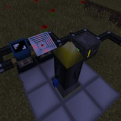
Телескоп, станція керування місіями й майданчикСтанція керування місіями
Далекий космос
Для інших зірок місія вимагає більшого: щонайменше 3 завершені місії на станції та антену зв'язку, прив'язану частотним модулем. Інших зірок не видно з Землі:
Часом до планети підлітають астероїди. Знайди астероїд телескопом і запусти місію з шахтарською ракетою. Вона повернеться на той самий майданчик із 10–30 блоками: алмазною, золотою й смарагдовою рудою, метеоритним залізом, місячними рудами й астероїдним каменем. Приблизно одна місія з десяти невдала.
Корисно знати
Космічна станція допомагає знайти на планеті під нею села, особняки й підземелля босів у радіусі 1000 блоків. Папір досліджень переносить завершені місії між станціями.
Космос
Виживання в космосі
На Місяці, Марсі, астероїдах, Венері й у світах GalaxySpace дихати не можна. Звичайний смолоскип там гасне, а без повного скафандра вакуум завдає 18 шкоди кожні 3 секунди.
Кисень
Збирач кисню працює на Землі будь-де, а у вакуумі бере кисень лише з листя чи пшениці поруч. Перший запас вези з собою.
Кисневий компресор наповнює балони киснем від збирача.
Костюм: маска, кисневе обладнання, два балони й парашут.
сам поповнюється в зоні з киснем; ставиться в балони 4–6
База з повітрям
Розподільник кисневої бульки створює міхур кисню й не вимагає герметичних стін. Добрий для першої бази.
Кисневий герметизатор заповнює закриту кімнату до 800 блоків. Кілька герметизаторів сумують об'єм. Над машиною й поруч із нею не має бути блоків.
Що тримає повітря: непрозорі блоки, блоки скла й скляні панелі. Труби й дроти крізь стіну мають бути герметичними (дивись «Проводка, труби, вентиляція»).
Повітряний шлюз: щонайменше 7 рамок і контролер, для якого потрібне метеоритне залізо з Місяця.
Герметична кімната з повітрям
Радіація
Удень під відкритим небом шкала росте приблизно на поділку за 2 секунди й менш ніж за 2 хвилини доходить до небезпечної межі. Під дахом вона спадає, але лише до трьох чвертей, решту знімають таблетки. Від радіації рятують важкий скафандр або генератор магнітного поля (модуль «Розширювач» збільшує його радіус). Легкий скафандр не рятує.
Шкали радіації й температури на екрані
Тиск
На планетах із густою атмосферою високий тиск дає нудоту, сліпоту й повільність, ще вищий забирає здоров'я, а максимальний убиває одразу. Тримає його лише важкий скафандр або гравітаційний модуль зі стабілізацією. Зона гравітаційного модуля йде на 16 блоків угору, кілька вниз і на 8 убік, а кожен «Розширювач» додає ще 2.
Температура
Спека й холод шкодять без термопрокладок. На Меркурії спека, а чим далі від Сонця, тим холодніше. Найсуворіші — Тритон, Хаумеа, Енцелад і пояс Койпера: для них готуй термокостюм 3-го або 4-го рівня.
Їжа, рослини й гази
У вакуумі можна їсти лише консерви. Звичайна їжа працює там, де є кисень. Консерви крафтять з олов'яної каністри й двох яблук, морквин, скибок кавуна чи картоплин, а тушонку — з каністри й двох порцій фаршу з яловичини (сирої яловичини на верстаті).
Рослини надворі гинуть, тож ферму ізолюй. Рідини на планетах замерзають або випаровуються.
Природний газ, етан і гелій-водень вибухають ланцюгом від вогню, лави, факелів і вибухів. Без кисню нічого не горить.
На деяких планетах є бурі, токсичні дощі, метеорити й корозія. Перед висадкою подивись опис цілі на карті.
Скафандри
Легкий скафандр рятує від вакууму, але не від радіації. Важкий захищає ще й від радіації та тиску, тож бери його якомога раніше. Модулі ставлять на модифікаційному столі: окуляри з сенсорами, нічний зір, дихання під водою, джетпак, прискорювачі бігу, високий стрибок, сила тяжіння, захист кобальтовими пластинами тощо.
Модифікаційний стіл
Космос
Ракети 1–6
Кожен рівень ракети відкриває нову частину неба. У цій збірці важлива ще й відстань до цілі: часом вигідно летіти через ближчу планету. Перед кожним вильотом дивись вимогу на галактичній карті.
Ракети вищих рівнів не мають однієї схеми. Їх збирають із деталей: ніс, корпус, двигун, прискорювач, стабілізатори й балон. Кожну деталь робить верстак NASA за своєю схемою, а збирач ракет складає готову ракету. Корпус тримають надміцні пластини, і для кожного рівня потрібен камінь із певного супутника:
Кожен матеріал доступний на рівні нижче, тож застрягти неможливо. Ракеті 4 рівня потрібні ще три посадкові модулі: без третього вона не злетить. Їхні схеми шукай у скарбницях і стеж за деревом досягнень.
Паливо для далеких рейсів
Сепаратор рідин розділяє воду. Метан, етан, гелій і водень дають кращі суміші палива. Газ видобувай збирачем газу, рідини перетворюй через зріджувач і синтезатор метану. Газовий екстрактор набирає природний газ у каністру по 200 mB за раз.
Вітрова турбіна працює лише там, де є атмосфера, а сонячно-вітрова панель — лише без неї.
Гібридна панель дає вдвічі більше за покращену.
На Венері є геотермальний генератор, що бере тепло з надр.
Захист бази
Планетарний щит ловить метеорити.
Генератор магнітного поля захищає від радіації.
Гравітаційний модуль дає земну гравітацію, а зі стабілізацією ще й тримає тиск.
Їжа й вода
Гідропонна ферма дає їжу там, де звичайні рослини гинуть: заживи основу знизу й постав над нею до трьох блоків ферми. Рідинний екстрактор викачує рідину з-під себе на будь-яку глибину, тож воду можна здобувати автоматично.
Гідропонна ферма
Космічна станція
Відкрий карту під час польоту, вибери планету й натисни створення станції: карта покаже потрібні матеріали. Сонячні панелі на станції дають удвічі більше енергії, а сама станція допомагає шукати об'єкти на планеті під нею. Повітря на станції немає, тож спершу зроби герметичну кімнату. Без обертальних двигунів гравітації немає. У GalaxySpace станцію можна поставити ще біля Марса й Венери.
Техніка
Місячне багі: шасі, колеса, сидіння й ящик на верстаку багі. Їздить на ракетному паливі, між планетами не літає.
Астрошахтар сам копає астероїди й везе руду на базу-стоянку. На гравця — до 6 шахтарів.
Короткі телепорти переносять між двома точками в одному світі.
Космос
Проводка, труби, вентиляція
На базі працює кілька окремих мереж: дроти несуть енергію, рідинні труби — кисень, нафту, паливо й воду, труби Quark — предмети, а димарі виводять дим. Кожна мережа має свої правила. Сплануй їх до будівництва, бо переробляти розводку в уже герметичній базі довго.
зелений — вхід червоний — вихід 200 mB у трубі 16 000 mB у резервуарі
Як читати машину
На боках машин Galacticraft і GalaxySpace намальовані роз'єми. Дріт чи труба приєднується лише до свого роз'єму, тож якщо дріт «не тягнеться» до машини, ти підвів його не з того боку.
Квадрат — енергія, блакитне кільце — кисень і гази. Зелена позначка — вхід, червона — вихід.
Гайковий ключ повертає машину на місці. Постав машину, подивись, куди дивляться роз'єми, і поверни її до дроту, а не дріт до неї.
Плануй так, щоб роз'єми сусідніх машин дивилися в один бік. Тоді один дріт і одна труба вздовж ряду живлять увесь ряд.
Енергія
Алюмінієвий дріт — основний. Усі дроти, генератори й машини, що торкаються один одного, утворюють одну мережу: енергія сама йде туди, де її бракує, а надлишок лишається в генераторах і сховищах.
Товстий алюмінієвий дріт пропускає більше. Він потрібен для машин 2-го рівня: на звичайному дроті вони працюють гірше.
Керований алюмінієвий дріт розриває мережу, коли на нього подано редстоун-сигнал. Постав його на відгалуження до машини, яку хочеш вимикати важелем, або між генераторами й рештою бази.
Сховище енергії — буфер між генераторами й машинами. Енергія заходить у зелений роз'єм, виходить із червоного. Сонячні панелі вночі нічого не дають, і саме сховище тримає базу до ранку. Кілька сховищ можна ставити підряд.
Вугільний генератор дає викиди, як піч. Став його надворі або з димарем (дивись нижче).
Схема: генератори → сховище енергії → одна магістраль уздовж машин. Так легко побачити, де бракує енергії, і додати генератор без перекладання дротів.
Рідини й гази
Одна й та сама рідинна труба несе все: кисень, нафту, паливо, воду, лаву й гази GalaxySpace. Кожен блок труби вміщує 200 mB.
Одна мережа — одна рідина. Якщо злити в одну трубу кисень і паливо, мережа заб'ється тим, що потрапило першим.
Фарбуй труби. Клацни трубу правою кнопкою з барвником . Труби різних кольорів, що стоять поруч, не з'єднуються, тож дві лінії можна вести впритул. Біла (нефарбована) труба з'єднується з будь-яким кольором, тому на перетинах білих труб не став. Добра звичка: блакитна — кисень, помаранчева — паливо, чорна — нафта, синя — вода, червона — лава.
Режим витягування. Гайковим ключем трубу перемикають між звичайним режимом і витягуванням. Звичайна труба лише приймає те, що машина виштовхує сама. Труба у витягуванні сама висмоктує рідину із сусіднього резервуара чи машини. Став її одну, біля джерела: біля машини-споживача вона висмоктуватиме рідину назад.
Рідинний резервуар уміщує 16 000 mB. Резервуари, поставлені один на одного, працюють як одна колона, і рідина осідає вниз. Резервуар нічого не віддає сам, тож із нього забирають трубою у витягуванні.
Звідки брати рідину: рідинний екстрактор над озером викачує його на будь-яку глибину (модуль «Розширення» збільшує площу); вода береться також із льоду. Нафту переганяє нафтоочисний завод у паливо, а завантажувач палива біля злітного майданчика заправляє ракету.
Енергія з рідини: паливний генератор спалює і ракетне паливо, і лаву. Екстрактор над лавою, труба й генератор дають енергію без пального.
Труба для водню з Galacticraft Planets — окрема: вона з'єднує лише машини Марса (електролізер води, синтезатор метану тощо).
Повітря на базі
Кисень іде тими самими рідинними трубами. Ланцюжок такий: збирач кисню → труба → сховище кисню → споживачі: кисневий герметизатор (заповнює закриту кімнату), розподільник кисневої бульки (міхур навколо себе, стіни не потрібні) і кисневий компресор (заправляє балони).
Розріз бази на планеті без повітря. Кисень іде від збирача через сховище до герметизатора, енергія — від панелі через сховище енергії. Усе, що проходить крізь стіни й дах, — герметичні блоки (позначені рамкою), вхід — через повітряний шлюз.
Веди кисень окремим кольором і не з'єднуй його з паливом.
Збирач у вакуумі бере кисень лише з листя чи рослин поруч. Посади біля нього дерева або гідропонну ферму.
Сховище кисню між збирачем і споживачами згладжує перебої: коли збирач стоїть, база ще дихає.
Над герметизатором є вентиляційний отвір. Якщо його закрити блоком, машина напише «Випускний вентиляційний отвір заблоковано!» і не працюватиме.
Кисневий датчик дає редстоун-сигнал, коли навколо є кисень. Ним можна вмикати лампу-попередження чи двері.
Крізь стіну герметичної кімнати
Звичайний дріт чи труба в стіні — це дірка, через яку тікає повітря. У стінах став герметичний алюмінієвий дріт і герметичну рідинну трубу: вони виглядають як суцільний блок і тримають повітря.
Доріжка ховає дріт чи трубу під суцільною підлогою. Зручно вести всі мережі під підлогою технічного поверху.
На Землі дим дає все, що горить: піч, доменна піч, коптильня, вугільний генератор, вогонь і лава. Викиди отруюють, а в закритому приміщенні можуть задушити. Тому плануй виведення диму разом з усім іншим.
Велика вентиляція за схемою з книги-інструкції. Лінія вентиляції під стелею збирає викиди цеху, редстоун-насос, заживлений енергією генератора, жене їх у витяжну трубу, фільтри нагорі ловлять викиди, а одна воронка під трубою збирає побічні продукти з усіх фільтрів. На поверхні досить звичайного димаря поруч із піччю.
Димар ставлять поруч із джерелом і ведуть угору. Що більше джерело димить, то більше потрібно димарів.
Верх димаря має бути відкритим або закінчуватися фільтром. Перекритий іншим блоком, димар згодом вибухне.
Печі й генератори зручно збирати в одному місці під спільним рядом димарів, а не розкидати по базі.
У закритих цехах став вентиляцію з помпами: одна помпа тягне в радіусі 16 блоків. Редстоун-насос працює від енергії генератора, тож підведи до нього дріт.
Фільтри, побічні продукти, респіратори й теплиці — в «Екології».
Предмети
Труба для предметів із Quark сама вибирає, куди везти предмет. На кожній трубі вона пробує по черзі:
вниз;
прямо, у тому ж напрямку, що й ішов;
убік, навмання;
вгору, лише коли більше нікуди;
якщо пройти нікуди, предмет повертається назад.
Ліворуч — куди предмет піде з кожної труби. Праворуч — збірна лінія під печами з одним виходом: тупики впираються в повні блоки, спуск униз забирає все в нижній ряд, бічна гілка вимкнена важелем, а нижній ряд веде в одну скриню.
Предмет іде лише туди, де його приймуть: повна скриня чи машина, якій він не підходить, пропускається.
Щоб усе йшло в один вихід, лиши предметам одну дорогу. Усі інші кінці труби впри в повний блок: у тупику предмет повернеться й піде до виходу. Найпростіше зробити вихід найнижчою точкою: «вниз» перемагає все.
Відкритий кінець труби в повітрі викидає предмети на землю й підбирає ті, що лежать поруч.
Редстоун вимикає трубу. Важіль біля труби на розгалуженні працює як клапан.
Сусідні труби з'єднуються самі. Дві паралельні лінії веди через блок.
Подавати предмети в трубу можна воронкою, викидачем або машиною, що сама виштовхує результат.
Як спланувати базу
Технічний поверх. Відведи шар під підлогою чи коридор уздовж машин лише під дроти й труби. Доріжки зверху дають рівну підлогу.
Кожній мережі свій колір і свій ряд. Енергія, кисень, паливо, вода й предмети йдуть паралельно й не перетинаються. Де перетин неминучий, веди одну лінію поверхом вище.
Буфер на кожній мережі: сховище енергії, сховище кисню, резервуар. Вони рятують від перебоїв і показують запас.
Роз'єми в один бік. Повертай машини ключем так, щоб їхні входи дивилися на магістраль.
Вимикачі: керований дріт на енергії, важіль на трубах предметів. Так можна зупинити одну ділянку, не розбираючи решту.
Дим окремо. Усе, що горить, стоїть в одному цеху з димарями або надворі.
Стіни наостанок. Спершу проклади мережі, потім зведи герметичні стіни з герметичними блоками в місцях проходу.
Запас місця. Лиши в кожному ряду вільні клітинки під майбутні машини.
Космос
Планети
Усі світи збірки за ієрархією: галактика → зорі → планети → супутники. Газові гіганти є лише на карті: висаджуйся на їхні супутники. Система Барнарда вимкнена.
Коротко в таблиці
Спорядження перед кожною висадкою: кисень, термозахист, захист від тиску й радіації. База має бути герметичною.
Сторінка книги про боси GalaxySpace: блейз на Церері й ґаст на Іо
Космос
Шлях до Енду
Енд — остання ціль збірки, і дорога до нього лежить через усю галактику. Що чекає в самому Енді — на сторінці «Енд».
Око Енду
Око крафтиться з перлини Енду, пилу блейза й коралу з Тау Кита F. Корали ростуть лише на Тау Кита F, тож спершу доведеться пройти весь маршрут: від Місяця до Proxima B і далі до Тау Кита. JEI покаже цей рецепт кожному, хто тримав перлину й пил блейза: так видно, куди рухатися далі.
Портал на Тау Кита
Хто не висаджувався на Тау Кита F особисто, того портал туди відкидає назад.
Елітри
Елітри лежать на кораблях міст Енду. Вони працюють лише у Верхньому світі й в Енді, а феєрверки складаються лише по 3.
Ремонт: на ковадлі елітри зліва, блок біотиту справа. Повертає чверть міцності за 3 рівні, чари й назва лишаються. Шкіра й книги для елітр не працюють.
Луска дракона падає лише з повторно викликаного дракона, по одній. Елітри й луска на верстаті дають дві пари елітр, і нова пара чорна.
Елітри фарбуються на верстаті будь-яким барвником.
Парад планет
За висадку на всіх планетах є окреме досягнення. Його отримання збірка святкує феєрверками й вісьмома тортами.
Довідка
Список модів
Усі моди збірки: спершу ті, що визначають гру, наприкінці технічні й бібліотеки.
Завантажую список…
Карта зв'язків
завантаження…
Довідка
Якщо щось не так
Що бачиш
Що робити
You are not white-listed
Нік у лаунчері не збігається з тим, що ти написав боту. Зроби в боті /join ще раз із точним ніком.
DEMO MODE або FML will not run in demo mode
Акаунт, яким ти увійшов, не має купленого Minecraft Java Edition.
«Мало вільної пам'яті»
Закрий браузер та інші програми. У налаштуваннях екземпляра, вкладка «Пам'ять», це попередження можна вимкнути.
«Updating MultiMC versions»
Натисни «Continue anyways».
Сервер не відповідає
Сервер працює цілодобово, тож, найпевніше, зникло світло або йдуть технічні роботи. Перевір у боті командою /status: він напише, коли сервер запуститься.
Чорні скіни або виліт Failed compiling chunk
У тебе встановлено OptiFine. Видали його з теки minecraft/mods: Prism, права кнопка на 2P2R, «Тека».
Found a duplicate mod
Ти оновив моди вручну через Prism. Видали нові файли з теки mods і запусти гру: автооновлення поставить правильні версії.